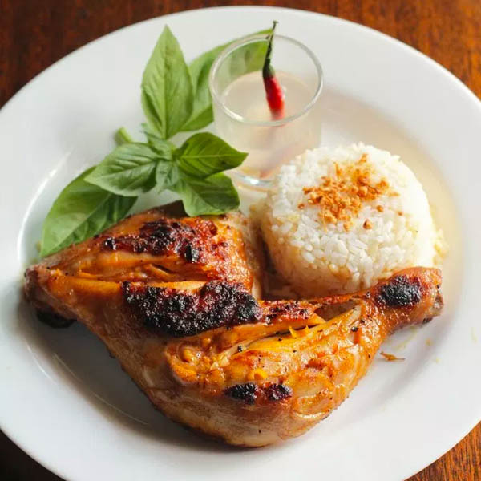

Chicken Inasal

Filipino style grilled chicken marinated in vinegar and calamansi.
Originating from the Visayas Region of the Philippines, Chicken Inasal is a simple dish that makes you want to come back for more!
This recipe is a variation of the famous dish catered to my families palette. Minimal, easily accessible ingredients.
Ingredients
- 4-6 Chicken thighs or any dark meat
- 1 bulb garlic
- 1 cup coconut vinegar or white cane vinegar
- 3 tablespoon soy sauce
- 1 stem lemongrass (leaves included)
- 10 Calamansi or 1 lemon
- 2 teaspoons Salt
- 1 tablespoon freshly ground Black Pepper
Step-by-Step
Prep work
- Combine Vinegar, Soy Sauce, Calamansi (remove seeds and include skin in mixture), black pepper.
- Cut (optionally smash) the lemon grass (leaves included) into 1 inch strips and add to liquid mixture.
- Cut (recommended smash) the garlic (set aside some of the garlic skin/peel) and add to liquid mixture.
- Rub salt throughly onto chicken.
- Add the chicken to the marinate, mix well, and let marinate for at least 2 hours.
Cooking
- Remove Chicken from marinade (set marinade aside) and remove any garlic and lemongrass residue from the chicken.
- Grill over medium fire, basting using marinade until internal temperature is between 175°-190°.
- Let rest for at least 5 minutes before serving.
- OPTIONAL: Serve with Soy Sauce, Calamansi, and Chili.